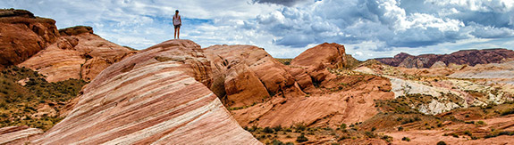

Welcome to Moapa Valley Chamber of Commerce
At the Moapa Valley Chamber of Commerce we want to support our community and our local buisnesses. We put on events and have occasional projects that we are working on to improve Moapa Valley.

The Clark County Fair and Rodeo is a huge attraction for Moapa Valley. Every year in mid-April thousands of people come to Moapa Valley to attend the fair. The fair consists of carnival rides, shows for all ages, variety of food, venders selling random things, animal showings, and the rodeo.
Sugars Homeplate is a local favorite restaurant. Many people traveling through Moapa will stop here to refuel and get back on the road. It is rumored that Criss Angel is working on purchasing Sugars and turning it into his own restaurant.
The Inside Scoop is another locally owned restaurant. They have a variety of options. You should be able to find something for everyone. They serve sandwiches, burgers, chicken, fries, ice cream and more. They offer dine in or take out.
Upcoming Events
Wild West Horseback Adventure

Wild West Breakfast Horseback Ride is an amazing adventure where you will travel on horseback and have the time of your life! You can call (702-792-5050) to sign up today! Be sure to not wear any open toe shoes.
The Clark County Fair and Rodeo
The Clark County Fair and Rodeo will be held on April 6th through the 10th. The fair will be showing animals and having shows every hour. Be sure to pick up a pamphlet when you get your tickets.
Weather Summary
Currently:
Temperature: ° F
Humidity: %
3 Day Forecast
Contact Information
Tanner Garlick
3011 N Moapa Valley Blvd
Moapa Valley, Nevada 89021
111-111-1111
MoapaValleyChamber@gmail.com